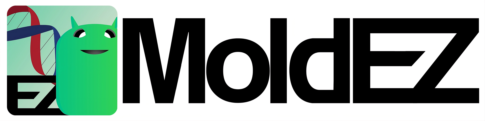

AI Detection
Uses Roboflow models to identify dishes and culture regions from selected or captured images.

Professional culture analysis
AI-assisted desktop software for detecting petri dishes, measuring mold coverage, comparing sessions, and exporting analysis reports.
Workflow
Uses Roboflow models to identify dishes and culture regions from selected or captured images.
Calculates plate diameter, culture area, coverage percentage, and pixel-based metrics.
Save, load, and compare analyses across time points for organized experimental tracking.
Export PDF reports with results, visual overlays, trends, and analysis metadata.
Requirements
Packaged builds are intended for desktop use. Roboflow model initialization requires internet access.